Yotsukaido, Chiba: things to do, food and stays
Yotsukaido · Chiba
Yotsukaido
Highlighted on the Chiba map.
Stay
Ｌｏｃａｌ Ｌｉｖｉｎｇ Ｎｅｗｙｏｒｋ Ｓｔｙｌｅ／民泊
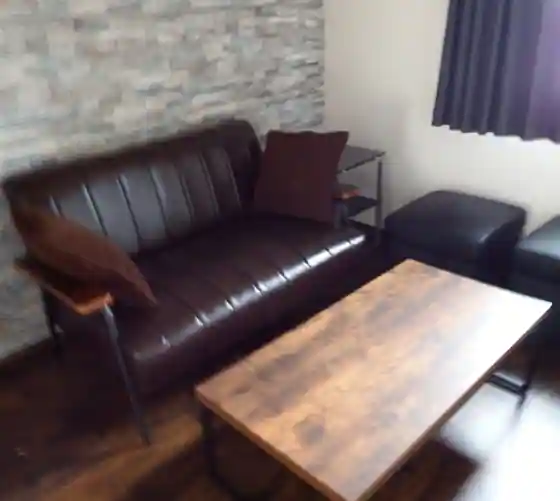
Local Living Newyork Style / Minpaku
ＬＡＮＡＲＴ四街道Ｓｔａｙｓ／民泊
LANART Yotsukaido Stays / Minpaku
Dining
Bosco
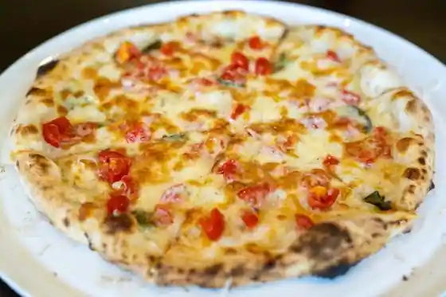
Bosco
オステリア ティモーネ
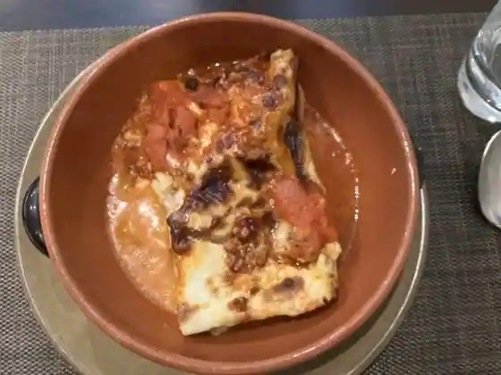
Osuteria Teimone
煮干らー麺 カネショウ 四街道
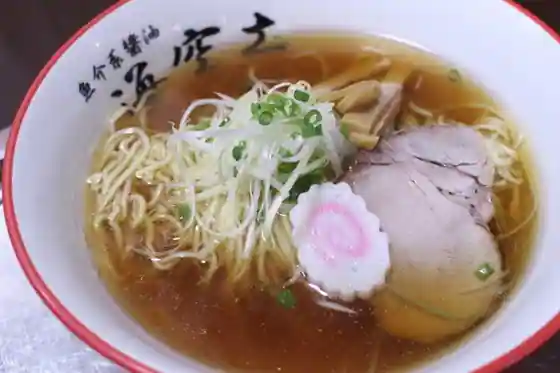
Niboshi Ra Men Kaneshou Yotsukaido
らーめん木陰
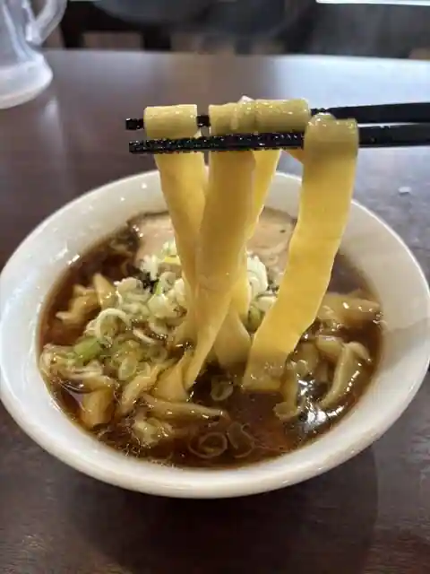
Ramen Kokage
籠屋食堂
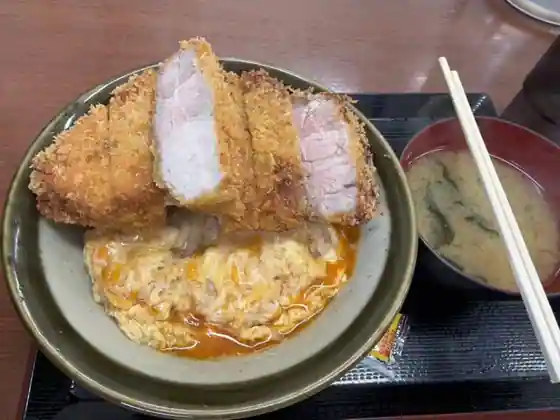
Kago Ya Shokudo
ボー・スィエル
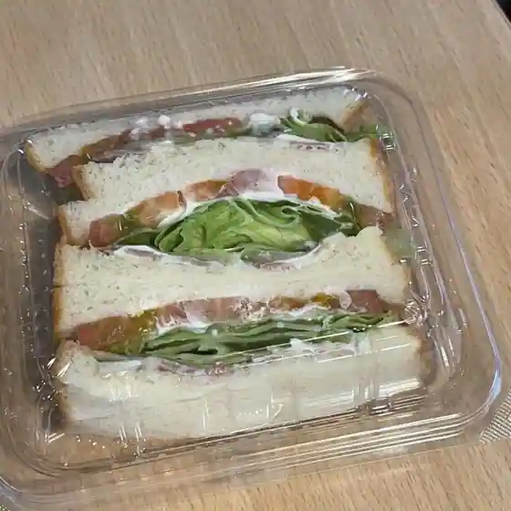
Bo Suieru
ラーメンショップ 大日店
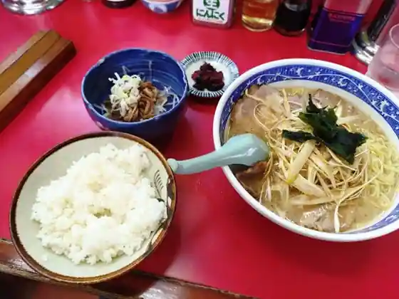
Ramen Shoppu Dainichi
ののや
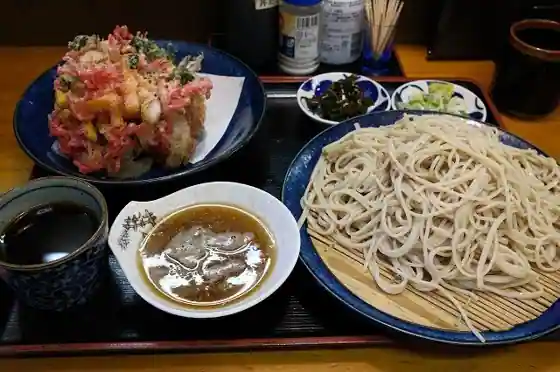
Nonoya
ほんがね
Hongane
Hungry Lion
Hungry Lion
ごはん屋さん チキボン亭
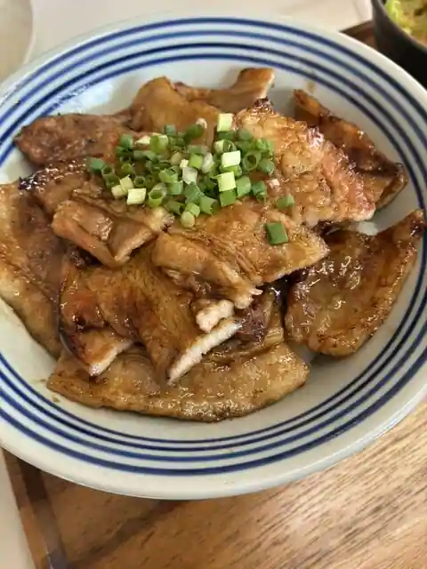
Gohan Ya San Chikibon Tei
ちくま庵
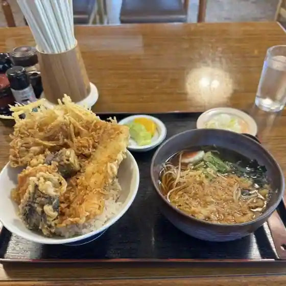
Chikuma Iori
麺屋赤鬼 味噌屋
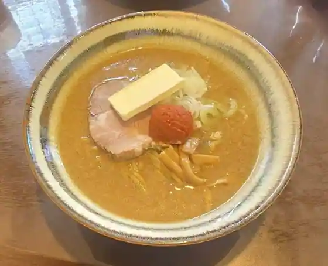
Men Ya Akaoni Miso Ya
古時古時
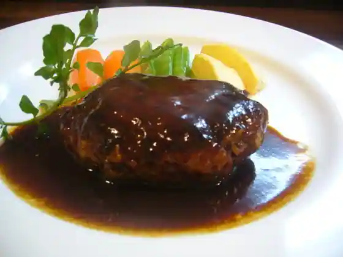
Koji Koji
トラットリア フィオーレ
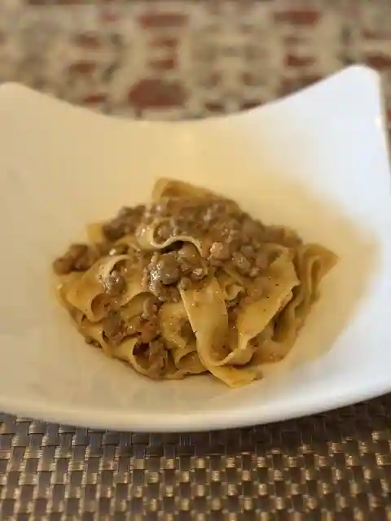
Trattoria Fiore
カフェ ローマ
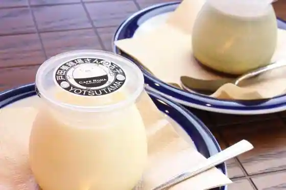
Cafe Roma
フランス菓子 イヴリーヌ
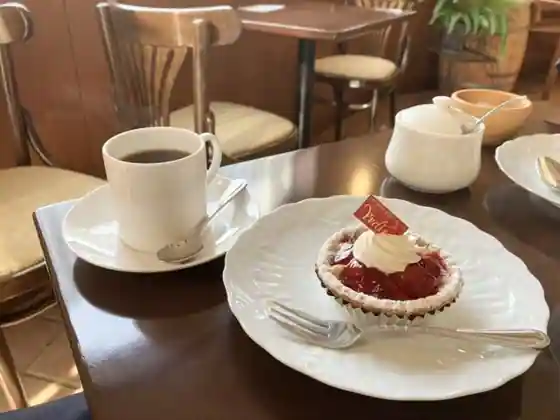
Furansu Kashi Ivurinu
麺屋 湊
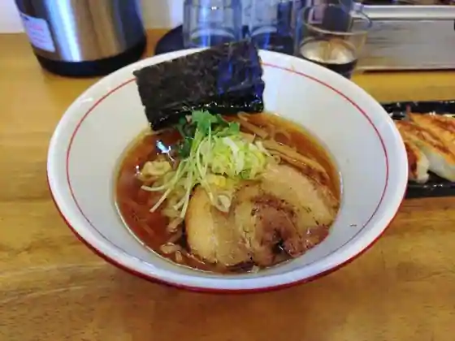
Men Ya Minato
ル マタン 四街道店
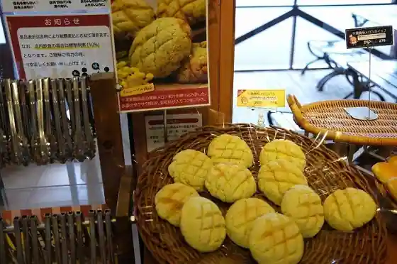
Ru Matan Yotsukaido
イタリアンバール GOCHI
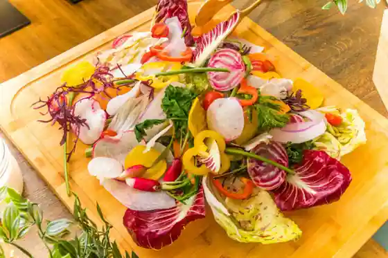
Itarianbaru GOCHI
燕京
Enkyo
みそ街道 四街道本店
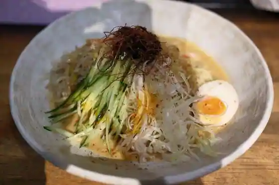
Miso Kaido Yotsukaido Hon
ありらん・やまと
Ariran Yamato
千倉亭
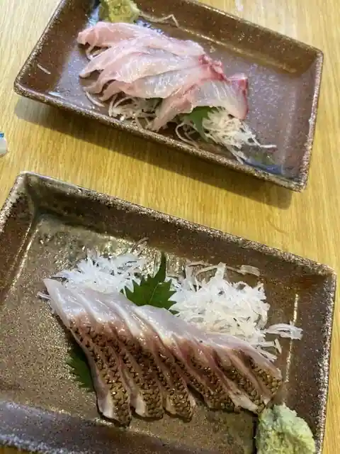
Chikura Tei
Sights
Yotsukaido Shika Hogaoka Fureai Center